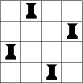

Programación Declarativa
2009-2010
Práctica 9
Un ejercicio clásico de programación consiste en el diseño de un programa que resuelva "el problema de las reinas". Este problema es el de colocar n reinas en un tablero de ajedrez de n x n casillas, de forma que no se coman entre sí. Es decir, no puede haber dos reinas en una misma fila, columna o diagonal del tablero.
Se pide definir una función reinas : int -> (int * int) list option* que, dado un entero n, que representa las dimensiones del tablero, devuelva una solución al problema de las reinas (la lista de posiciones que deben ocupar), si existe.
Ejemplos de ejecución:
# reinas 1;;
- : (int * int) list option = Some [(1, 1)]
Sólo es posible colocar la reina en la casilla (1,1).
# reinas 2;;
- :(int * int) list option = None
El problema no tiene solución para tableros de 2 x 2.
# reinas 3;;
- :(int * int) list option = None
Lo mismo ocurre para n = 3.
# reinas 4;;
- :(int * int) list option = Some [(1, 2); (2, 4); (3, 1); (4, 3)]
Para n = 4, la lista que se ha obtenido coresponde a la solución de la siguiente figura.

En "el problema de las reinas", para algunos valores de n, la solución no es única.
Por ejemplo, para n = 4, otra posible repuesta sería:
# reinas 4;;
- : (int * int) list option = Some [(1, 3); (2, 1); (3, 4); (4, 2)]
que se corresponde
precisamente con
la imagen especular de la figura anterior. La función reinas puede
devolver una
u otra, dependiendo de cómo se implemente.
Sin embargo, se puede también pensar en otra función, reinas_all,
que
devuelva todas y cada una de las posibles soluciones.
Implemente la función reinas_all: int
-> (int * int)
list list.
Ejemplo de ejecución:
# reinas_all 4;;
- : int -> (int * int) list list =
[[(1, 2); (2, 4); (3, 1); (4, 3)];
[(1, 3); (2, 1); (3, 4); (4, 2)]]
* Para cada de tipo de dato ‘a
en ocaml,
existe otro tipo ‘a option cuyos
valores
son None o Some x , para cualquier x de tipo ‘a.
Si lo prefiere, puede definir la
función reinas con tipo int -> (int * int) list